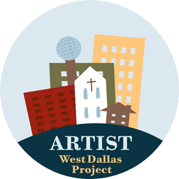

The West Dallas Arts Project
 The PCPC Arts Festival benefits After-School Arts Programs in the West Dallas Community with the partnership of Mercy Street, Voice of Hope, and West Dallas Community School. The 2008 Arts Festival donated over $24,000 to fund art classes and materials for the children. More than twenty-two artists volunteered a percentage of their sales proceeds or their personal time to enrich these children.